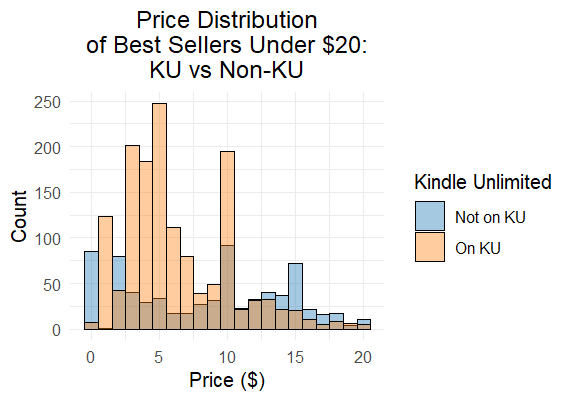
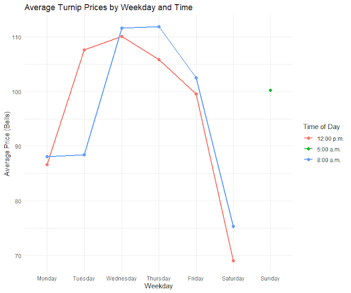
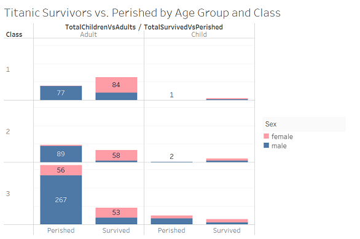
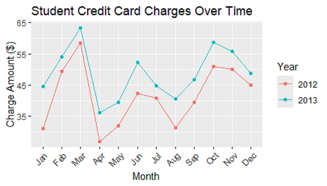

Overview
During my time at USF, I analyzed a variety of datasets across multiple student projects. I applied statistical and data analysis techniques to generate meaningful insights. This selection of several projects includes evaluations of book sales, video game industry performance, passenger mortality rates, and financial data. I also documented my learning experience applying statistical analysis techniques with R and created my own custom R package.
Projects
Kindle E-Book Sales Data Analysis
In this analysis, I evaluated a dataset containing over 133,000 observations of Amazon Kindle Ebook performance metrics to see what factors influence an e-book's success as a best seller. I then ranked the probability of a book's success by genre, comparing the relative success of e-books that did and did not publish with Kindle Unlimited.
According to the analysis, Science & Math genre books published on KU had the best chance of success (23.1%), while LGBTQ+ and Law genre books published without KU had the worst chance (0.1%). Overall, KU books were more successful.

Historical Sales Analysis of Video Game Industry
In this analysis, working in a group of 6, we analyzed three decades of video game industry sales performance data.
According to the findings, throughout time, video game titles have become less diverse while sales have expontentially increased. There is also much more variety of consoles and platforms to play games on. We also found that US and EU markets tend to trend similarly and show similar preferences.
Animal Crossing: New Horizons Turnip Investment Strategy Analysis
In this analysis, I analyzed 2 years of data from the game Animal Crossing: New Horizons to determine when the ideal time is to sell turnip investments to generate a profit on the "stalk" market.
According to the findings, the best window of opportunity tends to fall in mornings, during 8:00am and 12:00pm, between Tuesday's, Wednesday's, and Thursday's. Otherwise, Monday's, Friday's, and Saturday's had the lowest return performance and fewer opportunistic outliers overall.

Titanic Passenger Mortality Analysis
Using Tableau, I analyzed a well-known Titanic survivors dataset to examine mortality rates by class, gender, and age.
According to the findings of the analysis, among child victims, third class male children were most likely to perish despite there being an almost equal number of male and female children aboard.

Statistical Analysis with R Blog Project
In my Statistical Analysis with R blog, I chronicled my learning to apply statistical concepts with R programming. I wrote the blog to explain what I learned in a simple, easily understood way, so that anyone could follow along and make statistical programming approachable.
In this example, I explained the basics of time series objects and forecasting with the HoltWinters() function.

Custom R Package: lifeutils
For my R Programming course, I created a custom R package containing a series of 19 useful functions for common personal finance and everyday life calculations.
The package can be used to compare loans, estimate costs for a road trip, calculate bills, see credit utilization ratios, and more.